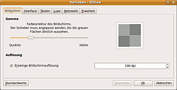
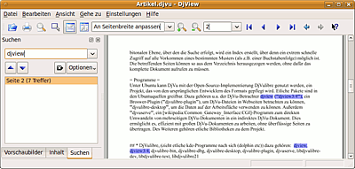
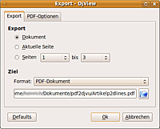

DjView
Dieser Artikel wurde für die folgenden Ubuntu-Versionen getestet:
Ubuntu 16.04 Xenial Xerus
Ubuntu 14.04 Trusty Tahr
Zum Verständnis dieses Artikels sind folgende Seiten hilfreich:
DjView4  ist ein Betrachter für DjVu-Dateien. Er stellt einen Teil des DjVulibre-Projektes dar, basiert komplett auf der Open-Source-DjVulibre-API, und wurde in Qt4 geschrieben. Er bietet alle Möglichkeiten zum Darstellen, Durchsuchen und Ausdrucken von DjVu-Dateien. Das Browser-Plugin stellt dieselben Funktionen für die auf Linux-Systemen verbreitetsten Browserprogramme Netscape-4.x, Netscape-6.x, Mozilla, Galeon , Konqueror und Opera bereit.
ist ein Betrachter für DjVu-Dateien. Er stellt einen Teil des DjVulibre-Projektes dar, basiert komplett auf der Open-Source-DjVulibre-API, und wurde in Qt4 geschrieben. Er bietet alle Möglichkeiten zum Darstellen, Durchsuchen und Ausdrucken von DjVu-Dateien. Das Browser-Plugin stellt dieselben Funktionen für die auf Linux-Systemen verbreitetsten Browserprogramme Netscape-4.x, Netscape-6.x, Mozilla, Galeon , Konqueror und Opera bereit.
Installation¶
Aktuell ist die Version DjView 4.10 (ab Ubuntu 15.10); aus Kompatibilitätsgründen ist auch ein Paket für Version DjView 3.x in den Quellen (djview3). Folgende Pakete müssen installiert [1] werden:
djview4 (universe)
djvulibre-plugin (universe, Browser-Unterstützung)
 mit apturl
mit apturl
Paketliste zum Kopieren:
sudo apt-get install djview4 djvulibre-plugin
sudo aptitude install djview4 djvulibre-plugin
Nach erfolgreicher Installation ist das Programm in GNOME unter
"Anwendungen -> Grafik -> DjView4"
zu finden.
Konfiguration¶
 Der Betrachter lässt sich über den Reiter "Einstellungen" konfigurieren, dort kann festgelegt werden, ob die Werkzeug-, Seiten- und Statusleiste angezeigt werden soll. Unter "Vorlieben" können Einstellungen zum "Bildschirm" (Gamma-Wert-Anpassung, Erzwingen bestimmter Auflösung) vorgenommen werden. Unter "Interfaces" lässt sich das Erscheinungsbild für verschiedene Verwendungen des Betrachters vornehmen, auch für den Einsatz als Plugin in Webbrowsern. Die Tastenkombinationen, die für die Verwendung der Bildschirmlupe, Texte oder Bilder auszuwählen, und Hyperlinks anzuzeigen wird unter "Tasten" konfiguriert, die Lupenfunktion (Vergrößerungsfaktor, Ausschnitt) unter "Lupe". Ein Proxy kann unter "Netzwerk" angegeben werden. Unter "Erweitert" finden sich Einstellungen zur Größe des Zwischenspeichers, eine manuelle Farbkorrektur für den Drucker, die Optionen, erweiterte Funktionen in den Menüs zu verwenden, sowie versteckten Text in der Statusleiste anzuzeigen (wenn im Anzeige-Fenster mit der Maus-Cursor darüber steht).
Bedienung¶

Der Betrachter teilt sich in der Standardeinstellung in zwei Hauptbereiche auf, links die Seitenleiste, rechts das Hauptfenster, in dem das Dokument dargestellt wird. Die Bedienung erfolgt über die Reiter und die Werkzeugleiste; die meisten Funktionen können auch über das Kontextmenü ( -Klick im Hauptfenster) oder Tastenkürzel erreicht werden.
-Klick im Hauptfenster) oder Tastenkürzel erreicht werden.
Seitenleiste¶
In der Seitenleiste werden die "Vorschaubilder" angezeigt, -Klick öffnet ein Menü zur Größeneinstellung der Thumbnails, ein Doppelklick öffnet die entsprechende Seite im Hauptfenster. Außerdem kann der "Inhalt" angezeigt werden, auch hier öffnet ein Doppelklick die entsprechende Seite. Im dritter Reiter "Suchen" lässt sich die versteckte Textebene durchsuchen; die Schaltfläche "Optionen" (oder -Klick in der Leiste) öffnet einen Auswahldialog, um die Modi "Groß- und Kleinschreibung beachten", "nur ganze Wörter", sowie "reguläre_Ausdrücke" für die Suchfunktion zu aktivieren. Die Pfeiltasten ermöglichen das Weiter- oder Rückwärtssuchen; die verwendeten Suchbegriffe lassen sich mit mit der Taste neben dem Eingabefeld wieder aufrufen. Falls das Dokument keinen Textebene enthält, wird eine entsprechender Hinweis ausgegeben.
Die einzelnen Reiter der Seitenleiste lassen sich auch vom Hauptfenster abkoppeln, um z.B. alle gleichzeitig im Blick haben zu können, dafür die Taste oben links neben der Schließ-Taste betätigen.
Werkzeugleiste¶
In der Werkzeugleiste finden sich Tasten zum "Öffnen", "Drucken" und "Suchen". Mit der Taste "Auswahl" kann mit der gedrückter  Maustaste und Ziehen ein Bereich im Hauptfenster markiert werden, der dann als Text (wenn Textebene vorhanden) oder Bild entweder direkt gespeichert oder in die Zwischenablage kopiert wird. Außerdem kann im erscheinenden Kontextmenü eine Zoomfunktion für den Ausschnitt aktiviert werden, zusätzlich lassen sich eine "maparea"-Angabe für djvused oder eine Adressen-Angabe für die getroffene Auswahl in die Zwischenablage kopieren.
Maustaste und Ziehen ein Bereich im Hauptfenster markiert werden, der dann als Text (wenn Textebene vorhanden) oder Bild entweder direkt gespeichert oder in die Zwischenablage kopiert wird. Außerdem kann im erscheinenden Kontextmenü eine Zoomfunktion für den Ausschnitt aktiviert werden, zusätzlich lassen sich eine "maparea"-Angabe für djvused oder eine Adressen-Angabe für die getroffene Auswahl in die Zwischenablage kopieren.
Mit den Schaltflächen "Kontinuierlich" und "Zwei Seiten nebeneinander" wird die Darstellung der Seiten im Fenster bestimmt, es lassen sich auch beide zugleich auswählen; im Auswahlfenster daneben lässt sich die Darstellungsgröße regeln. Mit den Lupentasten kann individuell in das Bild hinein oder herausgezoomt werden. Im Auswahlfenster daneben kann jede Dokumentseite direkt angesprungen werden; die weiteren Schaltflächen führen zur ersten, zur vorherigen, zur nächsten und zur letzten Dokumentseite. Mit den hellblauen Pfeilen ganz rechts kann in der "Anzeige-Historie" geblättert werden. Bei angeklickter "Direkthilfe" erscheinen Erläuterungen zu bestimmten Funktionen, wenn man den Maus-Cursor über den Menüpunkten etc. verweilt.
 Etliche der Funktionen lassen sich auch über die Reiter oben erreichen; unter "Datei" kann u.a. auch eine Webadresse angegeben werden, von der ein DjVu-Dokument direkt im Betrachter geöffnet werden kann; allerdings wird empfohlen, Webseiten im Browser zu öffnen, da das Browser-Plugin dafür besser konfiguriert ist. Ebenso findet sich dort eine Liste der zuletzt geöffneten Dateien. Aus DjView lassen sich die Dokumente in anderen Dateiformate exportieren ("Exportieren als..."), momentan kann in die Formate PDF und TIFF (mehrseitig) sowie in die Formate PostScript, "encapsuled PostScript", BMP, ICO, JPEG/JPG, PNG, PPM, TIF/TIFF, XBM oder XPM (einseitig) exportiert werden. Eine ggf. im DjVu-Format vorhandene Textebene geht beim Konvertieren allerdings verloren. Unter Ubuntu 12.04 funktioniert der Export ins PDF-Format ggf. gar nicht, es entstehen "leere" Dateien.
Unter "Bearbeiten" finden sich die Funktionen zum Kopieren der Adresse, des Inhalts(verzeichnis) und der Anmerkungen in die Zwischenablage; Informationen, die über djvused in DjVu-Dateien einfließen können.
| Ansicht-> Display | |
| Name | Ebene |
| "Farbe" | Zeigt alles |
| "Schablone" | Stellt nur die bitonale Schablone/Maske des Dokuments dar |
| "Vordergrund" | Stellt nur die Vordergrundebene des Dokuments dar |
| "Hintergrund" | Stellt nur die Hintergrundebene des Dokuments dar |
| "Verborgener Text" | Überlagert die Darstellung mit der verborgenen Textschicht |
In "Ansicht" bindet sich neben den Einstellungen zum Zoomen ("Maßstab") und der "Drehung" des Bildes auch der Punkt "Display"; hier lassen sich die unterschiedlichen Ebenen der DjVu-Dateien einzeln betrachten.
Außerdem lassen sich u.a."Informationen..." zum Dokument selbst sowie die gespeicherten "Metadaten..." (zum Gesamtdokument, also Autor, Erstelldatum, verwendete Programme etc. und zu den einzelnen Seiten) aufrufen.
Statuszeile¶
In der Statuszeile werden jeweils Erläuterungen zu den Menüpunkten angezeigt, dazu die Seitennummer im Dokument, die Größe des Bildes sowie die Auflösung in dpi, außerdem wird rechts die jeweilige Position des Maus im Dokument in Pixel-Koordinaten ausgegeben. Dazu kann, wenn in den Einstellungen angegeben, der verborgene Text, über dem sich der Maus-Cursor gerade befindet, angezeigt werden.
Bildschirmlupe¶
Bei (in Standardeinstellung) gedrückten Strg + ⇧ -Tasten öffnet sich eine Bildschirmlupe, wenn sich der Maus-Cursor im Hauptfenster befindet. Sie kann durch Bewegen der Maus verschoben werden. So lassen sich Details genau betrachten, ohne die Gesamt-Auflösung heraufsetzen zu müssen.
Browser-Plugin¶
Das Plugin bietet alle Möglichkeiten des Betrachters (bis auf die zusätzlichen Speicher-Optionen des Kontextmenüs bei der Auswahl eines Bereiches). Für webbasierte Dokumente wird die Verwendung des Browser-Plugins empfohlen, da der Betrachter nicht auf die speziellen Caching- und Proxy-Einstellungen des Browsers zurückgreifen kann. Mit aktuellen Opera-Versionen funktioniert das allerdings nicht, es dort kann aber javadjvu verwendet werden.
Wenn unter Firefox die Anzeige des Plugins zunächst recht klein ist, hilft es ggf., die Seite neu laden zu lassen. Dann sollte das Plugin das ganze Fenster ausfüllen.
Kommandozeilen-Optionen¶
DjView kann mit einer Vielzahl von Parametern direkt von der Kommandozeile [2] aus gestartet werden, so dass z.B. eine bestimmte Datei direkt mit aufgerufen wird, aber auch alle Funktionen der grafischen Oberflächen lassen sich als Optionen mit angeben, z.T. sind die Optionen sogar über die Funktionen der Bedienelemente hinausgehend. Eine komplette Liste dieser Parameter liefert die Manpage des Programms.
Tastenkürzel¶
Viele der Funktionen lassen sich auch über Tasten bedienen, insbesondere die Navigation im Dokument kann über komplett über die Tastatur erfolgen.
| DjView4-Tasten | ||||
| Taste(n) | Funktion (Menü) | Taste(n) | Funktion (Navigation) | |
| Strg + N | Neu | 1 | Zoom 100% | |
| Strg + O | Öffnen | 2 | Zoom 200% | |
| Strg + S | Speichern unter... | 3 | Zoom 300% | |
| Strg + E | Exportieren als... | ↑ | nach oben scrollen | |
| Strg + P | ↓ | nach unten scrollen | ||
| Strg + W | Schließen | ← | nach links scrollen | |
| Strg + Q | Beenden | → | nach rechts scrollen | |
| F2 | Auswählen | Pos1 | obere linke Ecke des Bildes anspringen | |
| Strg + C | Kopiere Adresse | Ende | untere rechte Ecke des Bildes anspringen | |
| Strg + F | Suchen... | Strg + Pos1 | zum Beginn eines mehrseitigen Dokuments gehen | |
| F3 | Weitersuchen | Strg + Ende | zum Ende eines mehrseitigen Dokuments gehen | |
| ⇧ + F3 | Rückwärts suchen | nach unten oder zur nächsten Seite scrollen | ||
| F4 | Kontinuierlich | ⏎ | ebenso | |
| F5 | Zwei Seiten nebeneinander | ⌫ | nach oben oder zur nächsten Seite scrollen | |
| F6 | Erste Seite einzeln | Bild ↑ | zur nächsten Seite gehen | |
| ⇧ + F6 | Rechts nach links | Bild ↓ | zur vorherigen Seite gehen | |
| Strg + I | Informationen... | + | in das Bild hineinzoomen | |
| Strg + M | Metadaten... | - | aus dem Bild herauszoomen | |
| F11 | Vollbild | [ | Bild nach rechts drehen | |
| F9 | Zeige Seitenleiste | ] | Bild nach links drehen | |
| F10 | Zeige Werkzeugleiste | W | an Seitenbreite anpassen | |
| ⇧ + F1 | Direkthilfe | P | an Seite anpassen | |
Alternativen¶
djvusmooth - ein schlichter Betrachter mit etwas weniger Bedienkomfort, es können aber Änderungen an Text und Metadaten vorgenommen werden
javadjvu - ein in Java verfasster Reader, der auch als Webapplet verwendbar ist
Evince - Der Standard-GNOME-Dokument-Betrachter ist ohne weiteres Zutun in der Lage, DjVu-Dateien darzustellen, liefert aber natürlich nicht die speziellen DjVu-Funktionen
Okular - Auch das KDE-Pendant kann DjVu-Daten darstellen, allerdings ist dazu die Installation des Paketes okular-extra-backends nötig.
 Übersichtsseite
Übersichtsseite- Erstellt mit Inyoka
-
 2004 – 2017 ubuntuusers.de • Einige Rechte vorbehalten
2004 – 2017 ubuntuusers.de • Einige Rechte vorbehalten
Lizenz • Kontakt • Datenschutz • Impressum • Serverstatus -
Serverhousing gespendet von